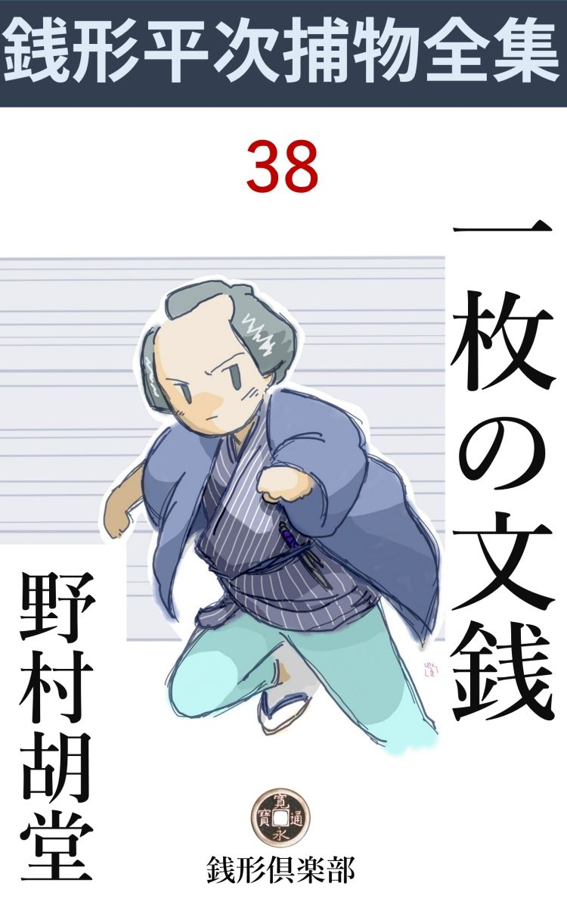
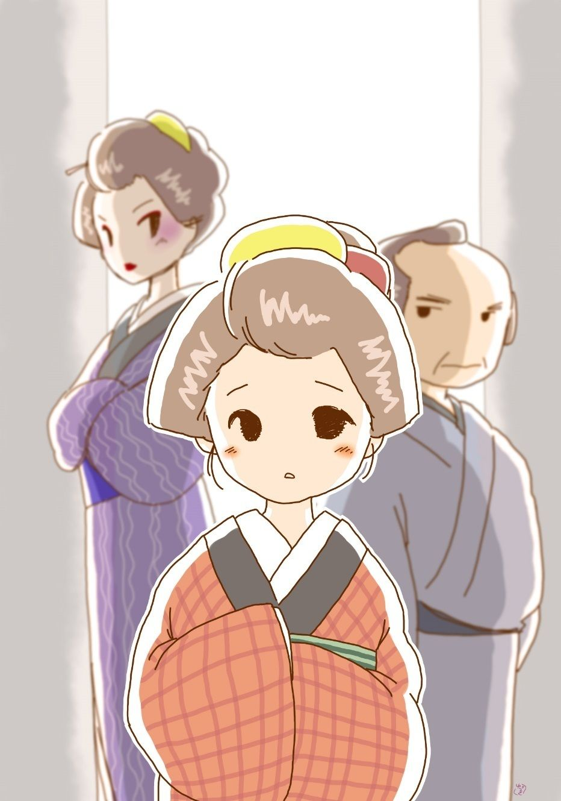

| 一枚の文銭: 銭形平次捕物全集第38話 (銭形倶楽部) | |
| 野村胡堂 | |
| ZENIGATA CLUB (2018) | |

一
「親分、退屈だね」
「------」
「目の覚めるような威勢のいい仕事はねえものかなア。この節のように、掻っ払いや小泥棒ばかり追っ掛け廻していた日にゃ腕が鈍 って仕様がねえ」
ガラッ八の八五郎は、そんな事を言いながら、例の癖で自分の鼻ばかり気にしておりました。
「大層な事を言うぜ、八。先刻から見ていると、指を順々に鼻の穴へ突っ込んでいるようだが、拇 指 の番になったらどうするだろうと、俺はハラハラしているぜ」
銭形平次は、早春の日向縁に寝転んだまま、こんな無駄を言っております。
「つまらねえ事を心配するんだね、親分」
「俺は苦労性さ、その指をどこで拭くか、そんなつまらねえ事まで心配しているんだよ。今晩あたりは、うけ合い、大きな鼻の穴の夢を見るよ。ウナされなきゃア宜いが」
「天下泰平だなア」
「だがな八、今に面白い仕事が舞い込んで来るよ、------退屈なんてえのは、鼻の穴のでっかい人間とは縁がない代 物 だよ」
「へッ、いやに鼻に祟 られる日だぜ」
「怒るなよ、八。仕事が舞込みかけていることだけは本当なんだ、------聞えるだろう、あの足音が------」
「成程ね、路地の中だ」
「そんな恰好で耳を澄すのは按摩 と八五郎ばかりさ、鼻の穴で物音を聞いているようだぜ」
「又鼻かい、親分」
「怒るなよ、八。お前の鼻がよく利くから、俺の仕事が運ぶんだ、平次の手柄の半分は、いわば八五郎の鼻の御蔭さ。今度お目にかかったら、笹野の旦那に申上げておこう」
「冗談じゃねえ」
「ところで、あの足音だ、------後 金 の緩 んだ雪駄 を引摺り加減に歩くところは、女や武家や職人じゃねえ、落 魄 れた能役者でなきゃア、先ず思案に余ったお店 者 だ」
「------」
縁側に寝そべって、路地の外の人間を透視する平次の話を、八五郎は小鼻を膨 らませて聴き入りました。
「先刻から格子を開けかけて、三度も引返しているよ。大の男があれほど迷うのは、よくよくの事があるんだね」
「行って見ましょうか、親分、------文句を言ったら、力ずくで引張り込む」
「そんな事をしちゃブチ壊しだ。そうでなくてさえ、迷い抜いているんだ。うっかり声を掛けると、逃げ出さないまでも、用心深くなって、田螺 みたいに口を緘 むに決っている、------知らん顔をしているんだ」
「------」
「それ格子を開けたろう、お静が出て行った様子だ、放って置け放って置け、------精一杯知らん顔をして、お前さんの話なんか、少しも聞きたくない、って顔をするんだよ、解ったか、出しゃ張ッちゃならねえ」
平次の言葉の終らぬうちに、お静は一人の男を案内して来ました。
「親分さん------始めてお目にかかります、私は------」
お店者 風の四十男、渋 い好みですが、手堅いうちにも贅があって、後金の緩んだ雪駄を穿く人柄とは見えません。
「まア、宜い、番頭さん、お急ぎの用事でなきゃア、一服やってからお話を伺いましょう、ここは陽が入って飛んだ暖かだから」
「へエ、------有難う御座います、そう呑気にしてもおられません」
「まア宜いだろう、あっしは岡っ引には相違ないが、こんな好い心持の日は、仕事の話を聞くのは大嫌いさ。ウツラウツラしながら、三度の飯を待つなんざ、洒落 たものさね。この男は八五郎と言って、家に居る下っ引だ、遠慮なんか要るものか、朝から鼻ばかり掘っているんで、遠慮の方で驚いて逃出したってね」
「有難う御座います、親分さん、何を隠しましょう、私は日本橋通三丁目越 前 屋 総七の番頭徳三郎と申すもので------」
「------」
平次とガラッ八は、それとなく顔を見合せました。越前屋というのは日本橋切っての大きな金物問屋で、江戸分 限 番附の前頭筆頭に上る家柄、先代の総七は三年前に死んで、今は手代上りの養子総七の代になっていることは、岡っ引ならずともよく知っていることです。
二
越前屋の番頭徳三郎の話は、如何 にも雲を掴 むようでしたが、それだけに反って、何とも言いようのない危機が、越前屋一パイに孕 んでいることは受取れました。
先代の総七が死んだのは三年前、今の主人の総七は元千吉と言った遠縁に当る手代で、家附の娘お信と一緒にされ、越前屋の大身代を相続しましたが、半年前女房のお信が怪しい死様を遂げてからは、独り者の総七は、放埒に身を持崩して徳三郎の言うことなどは、耳にもかけてくれないと言うのです。
それだけなら何でもありませんが、家の中には一年前から二た組の異分子が入り込み、いずれも主人 顔で奉公人を使い廻しているのでした。一組は先代総七の弟で、総七存命中は、義絶同様、敷居も跨 がせなかった勝造と、その娘のお勇、もう一組は、先代の総七、勝造兄弟には甥 に当る菊之助という若い男と、それに附き纏 って離れない、お粂という商売人上りの年増だったのです。
「今の主人の総七様は、元は私共の朋輩で御座いますが、気の優しい良い方で、道楽さえ内輪にして下されば、申分のない主人で御座います。が、勝造さん親 娘 と、菊之助さん夫婦は、何を企 むか、解ったものじゃ御座いません。先代の御主人は中気で亡くなりましたが、その娘のお信さんは、半年前のある晩、何を食べたか、もがき死にをなさいました。その時は、町内の本道が胡 麻 化 してしまいましたが、恐ろしい事に近頃になって、御主人総七様の命を狙う者があるような気がいたしてならないのでございます」
四十男の徳三郎は、物静かな調子ながら、怯 え切って、唇を顫わせております。
「なぜ主人へ言わないんだ」
と平次。
「申しました、幾度も、幾度も、うるさい程申しましたが、一向取合っては下さいません。何分若い盛りの主人で御座います。実を申せば、御新造が亡くなって、あの大身代が自由になるのを、結局気楽なことに思っていらっしゃるようで------」
徳三郎はフッと口を緘 みました。さすがに言い過ぎた事に気がついたのでしょう。
「御新造が死んだのは半年前だと言うし、叔父や甥が入って来たところで、とがめ立てするわけにも行くまいから、それだけの事じゃ、お前さんと一緒に乗込むわけにも行くまい。お前さんの忠義は結構だが、あまり取越し苦労をしないように蔭ながら主人を見張って上げる方がよかろう」
平次もそう言うより外には工夫もありません。徳三郎の心配に窶 れた痛々しさも気の毒ですが、掴みどころのない恐怖には、十手も捕縄も役には立たなかったのです。
「そんなもので御座いましょうか。昨日も主人は両国橋で、往来の者に喧嘩を吹っかけられ、危うく川へ投げ込まれるところだったと申しますし、四五日前には、朝の味噌汁の中に、見たこともない恐ろしい虫が入っておりました。斑猫 と申すんだそうで」
「それは念入りだな」
「いずれ又、思案に余った時は、御知恵を拝借に参ります。私がここへ来たことが知れると、悪者共は、どんなひどい事をしないとも限りません。どうぞ御内聞に願います」
「それはもう番頭さん、誰にも漏らすような事はないよ」
「店を抜け出して来るのも容易じゃ御座いません。今は何 刻 で御座いましょう」
「申刻 少し廻ったばかりだ、なア八」
「そんなものでしょうよ、横町の師匠が銭湯へ行ったし、赤鉢巻の豆腐屋が通ったばかりだし、八つ手の葉へ陽が落ちたし」
八五郎の時計はまことに念入りです。
「それでは大急ぎで帰らなきゃなりません」
徳三郎はションボリ立ち上がりました。少し華 奢 な撫で肩、四十男の疲れは見えますが、大 店 を背負って立つだけに、何んとなく貫禄があって、あまり丈夫そうでない身体から、精力的なものが発散すると言った人柄です。
その後姿が路地の外へ消えると、
「八、手前の鼻が役に立ちそうだぜ。あの番頭さんの後を跟けて、通三丁目まで行って見てくれ。姿を見られちゃならねえよ」
「合点」
八五郎はそのまま、猟犬のように飛出したことは言うまでもありません。
三
「親分、大変だッ」
ガラッ八は横ッ飛びに格子へ獅 噛 みつきました。
「何だ騒々しい、越前屋の番頭が消えてなくなったとでも言うのか」
「それどころじゃねえ」
「まア入れ。格子の外でわめき散らされちゃ、町内の人達が驚く。岡っ引のたしなみはそんな時ほど静かにすることだ」
平次が開けてやると、転げ込んだガラッ八。
「み、水が一杯欲しい」
上框 に坐り込んでしまいます。
「呆れた野郎だ。大変の口はまさか------喉が渇 いた------ってことじゃあるめえ」
「親分、喉も渇いたが、それより、越前屋の主人が死にましたぜ」
「何だと、誰が殺した」
平次は思わず膝を立て直しました。番頭の徳三郎が帰ったばかり、その口から聞いた『妖 かし』が四半刻も経たないうちに、越前屋の主人を殺した------と平次が直感したのも無理のない事でした。
「殺されたんじゃねえ、死んだんで」
「もう少し詳しく話してみろ」
「詳しくもざつ にも話しようはねえ。親分の言いつけ通り、番頭の後を跟けて行くと、------あの番頭は又恐ろしく几帳面な野郎で、他 見もしなきゃア、後ろも振り向かねえ、往来の真ん中を一文字に歩くんだ。------子供にだって後を跟けられる」
「無駄を言うな」
「真っ直ぐに越前屋へ帰ると、店の中は煮 えくり返る騒ぎだ、------番頭の留守に、主人の総七が、屑金物を入れた大箱の下敷になって死んだんですぜ」
「手前は見なかったのか」
「見ようと思ったが、後を跟けた番頭に姿を見られちゃ悪かろうと思って、臭いだけ嗅ぐと飛んで帰りましたよ」
「それは宜かった、------放って置いても、向うから迎いに来るよ」
「------でしょうかね」
「見ているが宜い」
平次の言葉は見事に当りました。それから間もなく越前屋の迎いが、八五郎と同じように息せき切って飛んで来たのです。
「親分さん、越前屋から参りました。主人が大変で御座います、ちょいと御出で下さいますように------」
「誰の指図 だ」
「叔父さんの勝造さんで」
「一体主人がどうした」
指図をした人を訊いて、それから主人の様子を尋ねるなどは、随分きわどい掛引きですが、使いの若い男は、そんな事までは気がつきません。
「大怪我をなさいましたんで、へエ」
「命は」
「お気の毒なことで御座います」
「怪我や病気に岡っ引は用事があるめえ。上手な外科なり、それも及ばなきゃア、お寺へ行くのが順当じゃないか」
平次は益々峻烈です。
「それが、その、勝造さんが、気に入らねえことがあるから銭形の親分さんにお願いして、見て頂くようにと言うんで」
「何？ 気に入らねえ事がある」
平次は考え込みました。使いは番頭の徳三郎が出したことと思い込んでいると、思いも寄らぬ勝造の指図と聞いて、暫らくは迷った様子です。
「八、もう一度出かけよう」
「へエ------」
「思いの外、混 み入っていそうだ」
「まだ水も飲んじゃいませんよ」
「馬鹿野郎、手桶へ頭でも突っ込んでいるが宜い」
平次はギュッと帯を締め直すと、お静の出してくれた羽織を引っかけて、使いの男と一緒に出掛けました。
四
「あッ、銭形の親分さん」
越前屋の店へ入って、一番驚いたのは番頭の徳三郎でした。
「御主人がどうかなすったそうだね、ちょいと見せて貰おうか」
「へエ、飛んだ事になって、途方に暮れております。どうぞこちらへ」
徳三郎の案内で、煮えくり返るような家の中を、掻き分けるように裏口へ抜けました。
「ここで御座います、親分さん」
徳三郎の指した光景は、全く惨憺 たるものです。主人の総七------まだ三十そこそこの若い男が、納屋の裏、本 屋 の裏二階の下で、幾十貫とも知れぬ、屑金物入の箱の下敷になって首を胴にメリ込ませて死んでいたのです。
「銭形の親分、御苦労様で、------お呼立てしてすみません」
「おや、お前さんは？」
「先代の弟の勝造で御座います。主人総七の死にようがあんまり不思議でなりませんから、親分さんに来て頂くように申付けました。四半刻ばかり私がここに頑張っていて、誰にも手を付けさせません。どうぞ、御覧下さいまし」
五十前後、分別盛りという年輩ですが、小 博 奕 が好きで身が持てなかったと言うだけに、何となく、人へのしかかって来るような気の強そうな男です。紬 の地味な袷、帯も、髪も、堅気な町人になりきっておりますが、言葉の底や、大きい眼の中には、決して人に下らない、傲 慢 な魂がピチピチ躍ります。
「それはよく気がつきなすった。------見付けたのはいつ頃でしょう」
平次は相変らず蟠 りもありません。
「半刻ともなりません、申刻 少し前で、お粂が稽古事から帰って、二階へ上がると間もなく、大きな音がしたんで、吃 驚 して二三人飛んで来るとこの有様です」
「------」
「この箱は納屋の二階に置いたもので、独りで落ちて来るわけがありません。誰か押し転がして落したか、二階の手 摺 の上に載せて置いて、紐でも引いたか------とにかく細工があったことは確かで、丁度番頭は留守だし、私が頑張って誰にも手を付けさせないだけの事は致しました」
勝造の言葉は毒を含んで、誰かに当て付けていることは疑いもありません。
「誰にも手を付けさせない代り、勝造叔父さんだけは付けたかも知れないわねエ」
「何だと、阿魔 」
勝造の忿怒の視線を辿ると、人垣の後ろから、二十五六の化粧の上手な女が、赤い唇を歪めて、冷たい笑いを送っているのでした。
「あれは？」
「お粂と言う女で、先代の甥の菊之助がどこかの矢場から拾って来た代 物 ですよ」
「伝馬町の大牢から這い出した、博奕 兇状 持 よりは少し優 しでしょうよ」
お粂は決して負けてはいません。
「何をッ。引摺り奴」
いきり立つ勝造を、
「まアまア勝造さん、折が悪い、我慢してやって下さい。------親分さん、どうぞ、お聞流しを願います。腹ん中は皆んな良い人達なんだが------」
番頭の徳三郎が一生懸命とりなします。
「番頭さん、御主人は何だってこんな場所へ来なすったろう。裏二階の下で、納 屋 の蔭などへ、大 店 の主人が入るのは可怪しいじゃありませんか」
と平次。
「へエ、私にも一向合点が参りません」
徳三郎はこんな事を訊かれると、首筋を掻いて尻込みばかりしております。
「皆な申上げた方が宜いよ、徳三郎どん。------ね親分、主人の恥になることだが、隠したって隠し切れるものじゃねえ、皆な言ってしまいますが、------主人の総七は半年こっち独り者で、道楽は強いが女には弱い方でした。何の因 果 か、菊之助の女房のこのお粂に誘 われて------」
「お黙り。叔父さん面をさして置けば良い気になって、私がいつ御主人を誘ったえ、畜生ッ」
お粂は又いきり立ちます。
「------誘われてと言って悪きゃア、気があって------としても宜い。とにかく、菊之助が留守になって、お粂が稽古事から帰って来る頃を見 測 らっては、この二階の下へやって来ましたよ。大店の主人が、見っともない話ですが、表や家の中は人目が多いから、さすがにヌケヌケとお粂の部屋へも入れなかったのでしょう。死んだ者の悪口を言うんじゃないが、本当に仕様のない男で------」
叔父勝造の話は恐らく本当でしょう、その場にいる十人あまり一人も口を出す者もありません。
「あの紐は何んだ」
納屋の二階から、狭い路地を隔てて相対したのはお粂の部屋、その部屋の格子に絡 んで、下までダラリと下がった麻縄を平次は指さしました。
「重い箱を納屋の二階の手摺の上に乗せ、ちょいと綱を引っかけて置いて、こっちの格子から引けば、丁度下にいる主人の頭の上に落ちますよ」
勝造の舌は辛辣 でした。
「畜生ッ、私を罪に陥す気かえ」
掴みかかりそうなお粂の気組み、女が美 いだけに、その激情的な顔は燃え立つ焔のような凄まじさです。
「そう一々啀 み合っちゃ叶わない、もう少し仲よくして貰いましょうか」
平次はさして気にする様子もなく、その辺の様子を丁寧に見廻りました。
昨夜雨が降った後ですが、ぬかるみ へ狭い板が敷いてあるのと、板の無いところは大勢で踏み荒して、何が何やら少しも判りません。
納屋の二階はガラクタの入れ場で、手摺と言ったところで頑丈一方の丸木を鎹 で締めた、形ばかりの物、その角になったところへ屑金物の箱を載せれば、如何にも紐一本で落せないこともありません。
それを引いたと言われる麻縄は、お粂の部屋の二階格子にダラリと下って、下の泥を引いておりますが、下からでは主人総七に見られずに、その端が引けるわけはなかったのです。
総七の死体は見るも無慙でした。脳天を打たれて、首が胴へめり込むほどですから、たいした傷が無くとも、目鼻口から鮮血が吹出して、四方の薄暗い中に、二た目とは見られない物凄さを漂わせております。
「何があったんだ、え？」
大きな声で四方を見廻しながら、二十七八の若い男が飛込んで来ました。先代の甥で、お粂の配 偶 者 の菊之助です。
「お前さん、私は、私は口惜しいッ」
お粂はやにわにその胸に飛付くと、身を揉んで泣き出しました。強気で持堪えた激情が、一ぺんに破裂したのでしょう。
五
菊之助は思いの外善良な男でした。
先代の総七が甥の菊之助を疎 んじて、手代の千吉（後の総七）と娘のお信を娶 合 せ、越前屋の跡取りにしてからは、少し自棄気味で遊び始め、時のはずみで、お粂のような鉄火者と一緒になりましたが、フトした事から、先代の総七が、菊之助の為に、かなりの金を遺してあることを知ってからは、悍 馬 のようなお粂を劬 め劬め、越前屋に帰って来て、店の仕事を手伝っていたのです。
荷扱 きの仕事で、毎日昼過ぎから夕景まで、横山町の問屋仲間を廻るのが菊之助の仕事、これは総七ならずとも、皆んな知っております。
「先代の主人がお前さんに遺したというのは、どれほどの金なんだえ」
平次は一と通り菊之助の話を聞くと、こう立ち入った質問をしました。
「それが判りません。先代------私には肉親の伯父ですが、亡くなる少し前に私を呼んで、お前も若いから仕方もあるまいが、大概にして身を固めたらどうだ。せめて三年越前屋の店で辛抱しろ。その辛抱を見定めた上で、お前にやる物がある、------とこう言う話でした」
「何だ、そのやる物というのは？」
「瓶 一パイの金 だそうですよ親分、------先代がどこかに埋めてあるに相違ありません。中に伯父の遺 言 も一緒に入っている筈です。伯父が死んで暮の十二月が丁度三年目、約束をしたことですから、金銀を一パイ入れた瓶を捜さして貰いたい------と、主人へ言いましたが、そんな昔話みたいな馬鹿なことがあるわけはないと、どうしても承知してくれません」
「主人の総七が、内々で捜した様子はなかったろうか」
「そんな事もあったようで御座います。私が毎日昼過ぎから問屋仲間を廻ることになったのも、一日一パイ店にいては困ることがあったので御座いましょう」
菊之助は、お粂と主人の事は何にも知らなかった様子ですが、その代り、他に主人を殺し兼ねまじき重大な動機を持っていたことを自分で喋 舌 ってしまいました。
「番頭さん、お前さんは何と言っても、後々の始末をしなければなるまい。菊之助さんの話をよく聞いて、折があったら、勝造さんにでも立ち会って貰って、その瓶を捜してくれまいか」
平次は後ろの方で事件の成行を不安そうに眺めていた徳三郎を顧 みました。
「へエ、承知いたしました」
商人らしい早速の返事ですが、騒ぎに転倒して、何となく気のない声です。
「それから、勝造さんの娘さんがあると言ったが」
と平次。
「これですよ、親分」
人垣の後ろの方から、父親の勝造が引張り出したのは、すっかり怯 え切った十八九の娘でした。丸ぽちゃの、何んとなく可愛気のある顔立ちで、妖艶なお粂とは、好い対照になります。
「お勇さんとか言ったネ」
「------」
「騒ぎの起った時はどこに居なすった」
「奥で、婆やと一緒にお仕事をしていました」
「主人はどんな人だと思った、お勇さん？」
「------」
「どうせ、良くは思わなかったろうな」
「え」
お勇は掛引きも知らないような娘でした。
「お父さんと仲が悪かったろう」
「え」

「お勇さんはここにいるのが嫌で嫌でたまらなかったろう。------が、御新造が死んでしまえば、主人と言っても先代には他人のようなものだし、お勇さんでも入って来なきゃア、越前屋の跡が立たない------とか何とか言う人もあったんだろう」
平次は妙に突っ込んで行きます。
「親分、娘はあの通り嬰児 だ、------そんな事を訊くのは殺生過ぎはしませんかえ」
たまり兼ねて勝造が口を出しました。地味で柔和 で、父親の勝造には似たところもないようなお勇は、全く平次の問いの対象には痛々しいほどだったのです。
雇人を一と通り調べて、暗くなってから平次は引揚げました。
「親分、どうしてあのお粂を挙げなかったんで------」
ガラッ八は、人影の無いところへ行くと、堪 りかねた疑いを投げ出しました。
「主人が人に殺されたという証拠は一つもないよ。------それに、あの二三十貫目もある箱を手摺の上へ乗りつけるのは、女の腕で出来ることじゃねえ」
「菊之助と二人がかりなら？」
「それも考えたが、------仕掛けの麻縄を、格子に引っ掛けたままにして置いたのは可 怪 い、お粂が下手人なら、人の駆けて来る前に、格子から引いた麻縄の始末位は出来た筈だ」
「成程ね。すると、下手人は？」
「番頭が一番怪しいと思ったが、俺のところへ使いを出したのが、番頭でなくて、勝造だと聞いて気が変った」
「へエ------」
「今のところ一番怪しいのは、主人総七が死ねば、自由に宝の瓶 を捜せる菊之助か、------それとも、越前屋の跡取りになるお勇かな。俺にも判らないよ」
「驚いたなア」
「この辺が手前の鼻の利かせどこだ、暫らくあの家を見張ってくれ。まだまだ騒ぎが続くぞ、お粂も勝造も、容易に引込む代物じゃない」
平次のこの予想は一と月経たないうちに、見事に的中しました。
六
越前屋の内外を見張っているガラッ八は、毎日三度位ずつ報告を持って来ました。
叔父の勝造と、菊之助の女房お粂の睨み合いは益々深刻になって、雇人 達も手のつけようのない有様ですが、商売の方は、長い経験を持った番頭の徳三郎が取仕切って、何の不自由もなく続けております。もっとも主人の総七は女房のお信が死んでからは、稼業の事などは一向身に染 まなかったようで、死んでしまったところで、店の締 括 りに何の不自由もあるわけはなかったのです。
三七日が過ぎると、親類方が顔を合せて、越前屋の跡目の下相談がありましたが、甥菊之助を立てようと言う人と、姪のお勇が宜かろうと言う人と二派に分れて容易に纏 まりません。
もっともお勇には親父の勝造というイヤな人間がついているのと、菊之助にはお粂という悪い女が控えているので、どちらも店の為になるまいから、いっそ、番頭の徳三郎を跡目に直し、親類から適当な嫁を見付けた方が、先代の気持にも添うのではあるまいかという意見もあります。
が、散々揉んだ末、先代総七は実弟の勝造を蛇 蝎 の如く嫌っていたのは隠れもない事実で、その娘のお勇では改めて養子を容れる世話もあり、博奕打の勝造が出しゃ張っては、店の信用にも拘 わるので、先代の遺言状さえ見付かって、菊之助が勘当を許されたことが判れば、菊之助を跡取りにする外はあるまい------と言うところまで話が進みました。お粂は名うての鉄火者ですが、菊之助は名前のように優しい若者、お粂に溺 れている外には、まず欠点の無い男だったのです。
勝造は極力反対しましたが、番頭の徳三郎が菊之助の立場に同情して、一生懸命親類方を説いたので、到頭越前屋の内外を捜して見ることになりました。
「大判小判を入れた瓶 などが商人の店から出て来てたまるものか、昔話じゃあるめえし、馬鹿馬鹿しい」
勝造は以ての外の機嫌でしたが、それでも土蔵の隅々、納戸、物置、天井裏から、床下まで、手代小僧交りに面白半分の家捜しが始まると、ジッとしてもいられない様子で、あっちこっちをウロウロしておりました。
昼過ぎまで一わたり捜しましたが、家族や雇人の知らないものは、何にも見付かりません。
「箆棒 奴 、そんな夢でも見たんだろう。貧乏人はよく金の夢を見るものだ」
勝造は引っきりなしに舌打ちをして、悪罵を撒き散らしております。
「博奕打は賽 ころの夢でも見るんだろう」
お粂は腹を据えかねて喰ってかかります。
「何を言やがる。同じ細工をするなら、手頃な瓶に鐚 銭 でも詰めてよ、都合の宜いように遺言状でも拵えて、埋めて置きゃア宜いじゃないか。猫の子ほどの知恵もねえ人足共だ」
勝造の暴言は、阻 みようもなく、越前屋の店中に響き渡ります。
「手前 のような悪党はそんな事をするだろうが、私達はそんな細工は大嫌いさ。遺言状が出て来て、良人が相続することに決れば、博奕打なんか、敷居も跨 がせるこっちゃない」
「何だと、人殺し女め」
二人は又噛み合いそうでした。
恰度 その時、
「見付かったぞ、皆んな来てくれッ」
床下に潜った小僧が大きな声を張上げました。
「何だ、何が入っているんだ」
瓶より中味の事を気にした多勢は先代の部屋だった六畳の畳をあげて、その床下に潜り込んだ小僧二人の上へ重なり合って覗き込みます。
「そんなにたかっちゃ見えねえや、------床下の土を掻いていると、瓶が首を出したんだ。蓋 がして縛ってあるぜ」
小僧は下からせき込んで報告しました。
「蓋を開けちゃならねえよ、瓶を壊 さないように、そっと掘出すんだ」
徳三郎は人間を掻きわけて上から指図をしております。
「退 いた退いた、上へあげるぞ」
瓶は五六人の手で床の上へ引揚げられました。一斗入ほど、たいした大きいものではありませんが、何が入っているか、非常な重量で、口は丸い板で押えて、渋紙を掛けた上、縄で縛ってあります。
が、渋紙はボロボロ、地 湿 りで縄もすっかり痛んでいる様子です。
「何が入っているんだ。石っころか瓦 か、後ですり替えられちゃ迷惑だ、中を見せて貰おうか」
勝造は飛んで来て蓋へ手を掛けようとしました。
「それはなりません。これは親類方と、銭形の親分でも立ち会って頂いて開 きましょう。この通り渋紙も縄もボロボロで蓋が動くから、上から油紙で押えて、ここにいるだけの人数で封印をして置きましょう」
徳三郎はあわててその瓶を抱込 むと、勝造を払い退けて屹 となりました。理の当然でもあり、大 店 の支配人の権力でこう言われると、叔父でも親類でも、口のききようがありません。
気のきいた手代は、商売用の油紙と、太い麻縄を持って来ました。徳三郎は四方に気を配りながら、ひどくずれた蓋を直して、その上からそっと油紙を掛けると、麻縄でキリキリと縛り、上から美 濃 紙 を細く切って巻いた上、立ち会った人数だけで封印をし、そのまま外の泥を拭いて仏壇の中に納め、ピタリと扉を閉めました。
「明日は親類方に集って頂くとして、今晩は店中の者が交る交る、三人ずつ張番をしてくれ」
徳三郎の処置には、文句のつけようがありません。勝造は黙って引込むと、お粂は勝誇った姿で、家の中一杯にはしゃぎ廻りました。
七
「親分、瓶を開くのは正辰刻 （八時）だ。ボツボツ出かけるとしましょうか」
ガラッ八に誘われると、平次は何やら考えに沈みながら顔を挙げました。
「何だか知らないが、俺は馬鹿にされに行くような気がしてならねえ」
「一体下手人は誰だろう、親分は大概目星はついたでしょうが------」
「それが判らねえから不思議だ。長い間十手捕縄を預かっていろいろの人間を手掛けて見たが、こんな悪く悧巧なのは始めてだ。証拠を一つも残さねえから怖い」
「親分が怖いんですって？」
「そうだよ」
「不思議なことがあるものだね。あっしには悪者がよく解っている積りなんだが」
「誰だ」
「勝造ですよ」
「馬鹿なことを言え、あれは江戸中でも滅多 にないほどの正直者だ、正直過ぎて困る位の男さ」
「へエ------」
平次はそれっきり口を緘 んで、通三丁目へと急ぎました。
越前屋へ着くと、親類方が皆んな集って、勝造親娘、菊之助夫婦、徳三郎などと一緒に、仏壇から取出した瓶を睨んで平次の来るのを待っているところでした。
「遅くなりました」
挨拶が一とわたり。
「それでは宜しゅう御座いますか。皆様のお言葉に従 って、私が封印を切ります」
親類総代の錨屋 万兵衛、瓶の封印の異常のないことを確かめさした上、鋏 を借りて、麻縄を一本一本切りました。
油紙を除くと、中からはボロボロの渋紙と腐った麻縄、その下に板の蓋が少しばかり見えております。
「一寸拝見」
平次は膝 行 り寄って、渋紙と麻縄と蓋を見ました。この辺は湿気のひどいところで、天日の届かぬ床下に三年以上埋められたのですから、地湿りと黴 で、滅茶滅茶に傷んでおりますが、埋めた時の儘に相違はなく、腐った麻縄や、歪んだ蓋にも、後から手を加えた様子は見えません。
「蓋を払いますよ」
万兵衛老人の手でハネられた蓋。
「アッ」
中は一パイの銭、金。
「退いて下さい、茣 蓙 の上へあけますから」
人を退かせて、茣蓙の上へあけると、中から出て来たのは、慶長大判、江戸座小判、一分判、丁銀、取交ぜて三百両あまり、詰 には寛永銭が二三百枚、その真ん中に、油紙に包んだ遺言状が一通、さして傷みもせずに交っております。
多分先代総七が思いがけぬ利分や、小遣の残りを投げ込んで、甥のために遺して置いたものでしょう。
「おや？ これは？」
茣蓙へ一番近く坐っていた平次は手を差伸して、一枚の銭を拾い上げました。
「大仏銭のようだが------」
詰 草 の寛永通宝に交って、たった一枚、真新しい文銭、------それは昔々徳川家康が鐘名 に文句を付けて、豊臣家を困らせ、大坂夏の陣の原因になった方広寺の大仏を、寛文二年三月、潰 して鋳た有名な文銭------だったのです。
寛文二年というと、ツイ一昨年の春、この瓶を埋めた先代総七が死んでから三月も後のことです。死んで三月後に新鋳 された文銭が、この瓶の中に紛れ込んでいるとはどうしたことでしょう。
「皆んな菊之助の細工だ。文銭が一枚紛れ込んだのは天罰と言うものだ、遺言状などは偽物に決った」
後ろから勝造がわめき立てます。物に我慢のない勝造はもう勝ち誇った気持で、じっとしてはいられなかったのです。
親類方も腹の中では勝造に同意してしまいました。こうなっては、遺言状などは見ても見なくても同じことですが、念のため一同立会の上目を通すと、------自分の死後、養子の千吉（後の総七）に宛てたいろいろの指図で、菊之助がお粂と別れたら、この瓶の中の金の外に、家作地所を三分の一ほど分けてやるように、もしまた、お粂と一緒なら、この瓶だけを形 見 にやれ------と書いています。
------弟の勝造は家名を汚すから、生涯寄せ付けてはならぬ、その娘のお勇は、心掛け次第で引取って世話をするように------と行届いた指図ですが、これも菊之助の偽 作 とすると、なんの権威もありません。
------番頭の徳三郎は暖簾 を分けて、身を堅めさせるように、永年の忠義に酬ゆる道を欠いてはならぬ------と書いてあります。
「番頭さん、先代御主人の親切、有難いことではないか」
「ハイ」
平次は涙含 む徳三郎を見やって、満足そうにうなずきました。
偽の遺言状にしては、如何にも行届いているので、立会った親類方も、何んとなくしんみりしてしまいました。
「この手蹟は先代のと少しは似ているだろうか」
平次は遺言状の文字を指さすと、
「先代御主人の御手蹟 に相違御座いません、文銭は何時入れたか分りませんが、とにかく、これは間違いもなく先代の御書きになったもので御座います」
徳三郎の言葉には毛程の疑いもありません。
親類方や他の雇人達に見せると、『よく偽せてある』と言うだけで、徳三郎ほど一生懸命に保証するものは一人もありません。
八
親類会議はやり直し、菊之助もお勇も相続が出来ないと決って、店は暫らく徳三郎が預かり、親類から後見人を定めて二、三年様子を見ることになりました。が、徳三郎が頑固に辞退して、どうしても相続を承知しないために、当分成行きに任せて、徳三郎に嫁でも取った上、何とかしようということになったのでした。
勝造は腹を立てて飛出し、お勇は女中とも居候 ともなく踏止りました。ゆくゆくは徳三郎に娶 合 せようと言う話もありますが、年が違い過ぎるので、お勇の方では承知しそうもありません。
「親分、越前屋はあれっきりですかえ。主人殺しはどうなるんで？」
ガラッ八は気を揉んでこんな事を言いますが、
「どうにもならないよ、主人の死んだのは災難とあきらめるさ」
「へエ------、そんなもんですかねえ、越前屋を飛出した勝造は親分の悪口を言って歩いていますよ」
「放って置け」
手の付けようがありません。
それから又一と月ばかり経ちました。
「親分、お粂の阿魔 は瓶 から出た金を持って逃出しましたぜ」
「本当か、八」
「菊之助は血眼 だ、------それから、徳三郎の囲っている女が判りました。槙 町 の小唄の師匠で、お崎って凄い年増ですよ。三月越し行かないから手が切れたのかと思ったら、昨夜久し振りでノコノコ出かけましたよ」
「有難い、それを待っていたんだ。手前 はその女をしょっ引いて来い」
平次はそこですぐ越前屋へ向いました。
「番頭さん、ちょいと訊きたい事があるんだが------」
「親分さんで、どうぞこちらへ」
「お粂が逃出したそうじゃないか。あの阿魔を挙げようと思うんだが、どうしても証拠が揃わねえ、女の手であの格子へどうして綱を掛けたかそれが知りたいんだ、部屋の中からじゃ納屋の手摺の綱は手 繰 れねえ」
「へエ------」
徳三郎は平次を案内して納屋の方へ行きました。
「ここから綱を投げれば、格子をもぐって部屋の中へ入るわけだが、格子が狭いから、女の芸当じゃむずかしい、------やはりお粂じゃなかったのかな」
「親分、あれを使えませんかしら」
「------」
徳三郎の指さしたのは、粗末な納屋の明り取りの横窓の枠 ------それは一間半ばかりの細い剥ぎ杉を、釘で打ち付けただけの棒でした。
平次は伸び上ってそれを引くと、釘が弛 んでいて、手に従って外れて来ました。
尖端には誂 向きの釘がありますから、それに麻縄の端を引っかけると、一間半ほど向うのお粂の部屋の格子に掛けられないことはありません。
お粂の部屋からは縄を手ぐれず、外から人目を避けて一間半もある竿 を持込めないとすると、下手人はこの納屋の二階から、どうして向うの部屋の格子へ綱を引っかけたか、その道具がどこにあるか、平次はそれを捜していたのでした。
「------」
平次は黙って徳三郎の顔を見ました。この明り取りの枠を教えたのは、白状も同様です。
「御用ッ」
気が付くと、徳三郎は真っ蒼になって身を翻 えしましたが、平次の手は早くも伸びて、その襟髪を掴んだのでした。
× ×
「親分絵解きは」
翌る日、ガラッ八は相変らず平次にせがみます。
「俺は最初からあの番頭を睨んだよ。最初ここへ来たのは、自分の留守に主人が殺されたように見せかけるためさ、時刻ばかり念入りに訊いたろう」
「成程」
「屑 金物 の箱に仕掛けた綱を、お粂の部屋の格子に通して、下へ引張って路地のぬかるみに敷いた板に挟んで置いたのさ。馬鹿な主人の総七が、人目を憚 ってお粂に逢いに行ってあの路地から話しているのが毎日申刻 ときまっているんだ。主人が板を踏むと頭の上へ二三十貫の箱が落ちて来る仕掛はよく考えたよ、もっとも綱の端っこは俺が行く前に板の下から抜いて置いたんだが------」
「何だって主人を殺す気になったんでしょう」
「自分より年下の手代が、娘の婿になって主人面をするのが癪 にさわったのさ。それだけなら知れずに済んだかも知れないが、物事があまりうまく運んだので、越前屋の跡目に直ろうとしたのが失 策 の基 さ」
「へエ------」
「床下から出た瓶の蓋が少し隙 いていたので、フト文銭を一枚投り込んだ------あの辺は徳三郎の悪賢こいところだ。瓶に手をかけたのはあの男より外にない。封印をする前、ほんの一寸の隙 にやったんだ。遺 書 は真物さ。菊之助はお粂に騙されていたが、根が良い男だ。実を言うと俺はお粂が飛出すのを待っていたんだよ」
「へエ------、どうする積りで」
「お粂は悪い女だ。総七にまでちょっかいを出していたんだが、追出す証拠もなく、菊之助もその気にならない。お粂が自分から飛出せば、菊之助とお勇は丁度良い配 偶 じゃないか。二人一緒になれば、従 兄 妹 同士で越前屋が立てられる。勝造は娘の出世になることだから、自然遠退くだろう。あれは口ほどでない腹の良い男さ」
「成程ね」
「徳三郎は太い男だ。する事が一々僧いよ。主人の配 偶 のお信を殺したのもあの野郎の仕業だろう、瓶へたった一枚の文銭を投り込んで遺言状を偽物と思わせ、菊之助を相続人にさせなかった手際などは凄い位だ」
平次------悪人でさえ憎みきれない平次が、こんなに言うのはよくよくの事でしょう。妾お崎の家に、想像以上の金品が隠してあったのも、徳三郎の悪賢さの証拠の一つだったのです。
（編注）
作品中には、身体の障害や人権にかかわる、差別的な語句や表現が見られますが、本書が成立した当時の時代背景等が現代とは異なる古典的な文学作品でもあり、著者が故人でもありますので、底本のままとしました。ご理解、ご諒承のほどをお願い申し上げます。
著者---野村胡堂
挿絵---萩 柚月 © 2017
初出---「オール讀物」昭和十年三月号 文藝春秋社
底本---「錢形平次捕物全集」第二巻 河出書房 昭和三十一年五月三十一日初版
編集・発行 銭形倶楽部